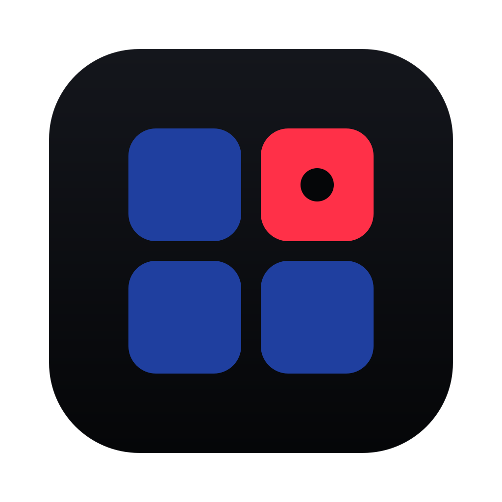
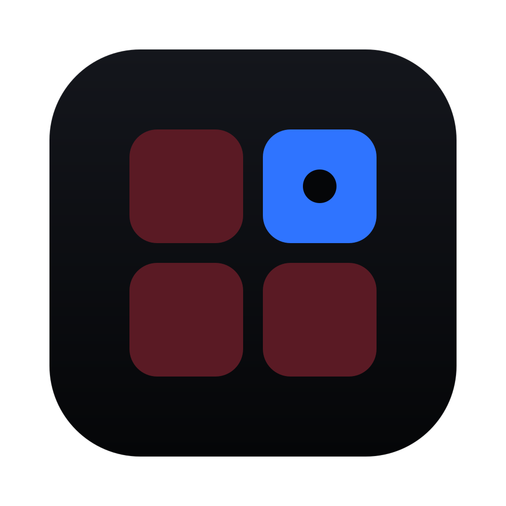
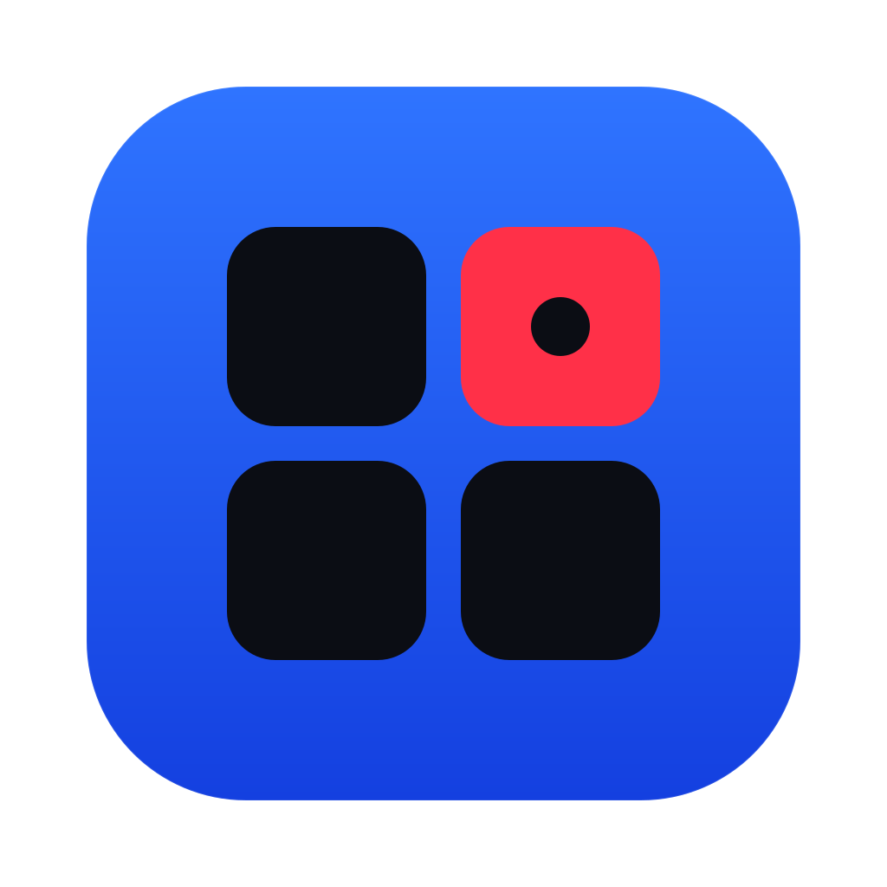
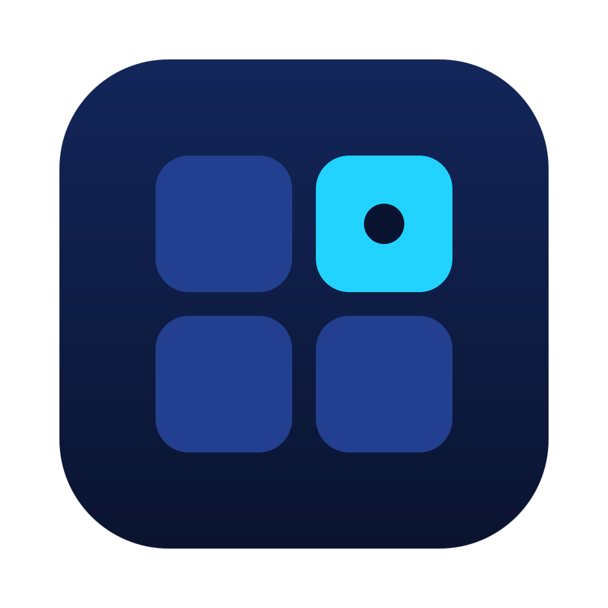

Grafito, gris y terracota (la que elegiste).

4 · Azul y rojo
Fondo negro, casillas azul profundo, activa roja.

4 · Rojo y azul
Fondo negro, casillas vino, activa azul eléctrico.

4 · Fondo azul
Fondo azul eléctrico, casillas negras, activa roja.

4 · Glaciar
Fondo marino, casillas azul, activa cian.